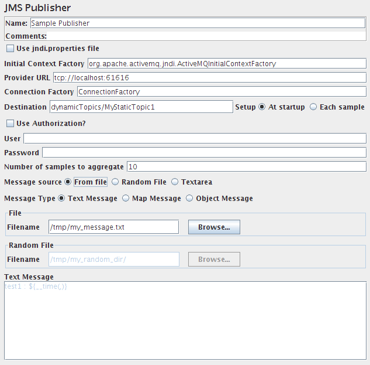

|
About
Download
Documentation
Tutorials (PDF format)
Community
Foundation
|
|
12. Building a JMS Topic Test Plan¶
|
|
JMS requires some optional jars to be downloaded. Please refer to
Getting Started
for full details.
|
In this section, you will learn how to create a
Test Plan
to test JMS Providers. You will
create five subscribers and one publisher. You will create 2 thread groups and set
each one to 10 iterations. The total messages is (6 threads) x (1 message) x
(repeat 10 times) = 60 messages. To construct the Test Plan, you will use the
following elements:
Thread Group
,
JMS Publisher
,
JMS Subscriber
, and
Graph Results
.
General notes on JMS: There are currently two JMS samplers. One uses JMS topics
and the other uses queues. Topic messages are commonly known as pub/sub messaging.
Topic messaging is generally used in cases where a message is published by a producer and
consumed by multiple subscribers. Queue messaging is generally used for transactions
where the sender expects a response. Messaging systems are quite different from
normal HTTP requests. In HTTP, a single user sends a request and gets a response.
Messaging system can work in sychronous and asynchronous mode. A JMS sampler needs
the JMS implementation jar files; for example, from Apache ActiveMQ.
See
here
for the list of jars provided by ActiveMQ 3.0.
|
|
|
12.1 Adding Users¶
|
The first step is add a
Thread Group
element. The Thread Group tells JMeter the number of users you want to simulate,
how often the users should send requests, and how many requests they should
send.
Go ahead and add the ThreadGroup element by first selecting the Test Plan,
clicking your right mouse button to get the Add menu, and then select
Add --> ThreadGroup.
You should now see the Thread Group element under Test Plan. If you do not
see the element, then "expand" the Test Plan tree by clicking on the
Test Plan element.
Next, you need to modify the default properties. Select the Thread Group element
in the tree, if you have not already selected it. You should now see the Thread
Group Control Panel in the right section of the JMeter window (see Figure 12.1
below)

Figure 12.1. Thread Group with Default Values
|
Start by providing a more descriptive name for our Thread Group. In the name
field, enter Subscribers.
Next, increase the number of users (called threads) to 5.
In the next field, the Ramp-Up Period, set the value to 0
seconds. This property tells JMeter how long to delay between starting each
user. For example, if you enter a Ramp-Up Period of 5 seconds, JMeter will
finish starting all of your users by the end of the 5 seconds. So, if we have
5 users and a 5 second Ramp-Up Period, then the delay between starting users
would be 1 second (5 users / 5 seconds = 1 user per second). If you set the
value to 0, JMeter will immediately start all users.
Clear the checkbox labeled "Forever", and enter a value of 10 in the Loop
Count field. This property tells JMeter how many times to repeat your test.
If you enter a loop count value of 0, then JMeter will run your test only
once. To have JMeter repeatedly run your Test Plan, select the Forever
checkbox.
Repeat the process and add another thread group. For the second thread
group, enter "Publisher" in the name field, set the number of threads to 1,
and set the iteration to 10.
| In most applications, you have to manually accept
changes you make in a Control Panel. However, in JMeter, the Control Panel
automatically accepts your changes as you make them. If you change the
name of an element, the tree will be updated with the new text after you
leave the Control Panel (for example, when selecting another tree element).
|
|
|
|
12.2 Adding JMS Subscriber and Publisher¶
|
Make sure the required jar files are in JMeter's lib directory. If they are
not, shutdown JMeter, copy the jar files over and restart JMeter.
Start by adding the sampler
JMS Subscriber
to the Subscribers element (Add --> Sampler --> JMS Subscriber).
Then, select the JMS Subscriber element in the tree and edit the following properties:
-
Change the Name field to "Sample Subscriber"
-
If the JMS provider uses the jndi.properties file, check the box
-
Enter the name of the InitialContextFactory class. For example, with ActiveMQ 5.4, the value is "org.apache.activemq.jndi.ActiveMQInitialContextFactory"
-
Enter the provider URL. This is the URL for the JNDI server, if there is one. For example, with ActiveMQ 5.4 on local machine with default port, the value is "tcp://localhost:61616"
-
Enter the name of the connection factory. Please refer to the documentation
of the JMS provider for the information. For ActiveMQ, the default is "ConnectionFactory"
-
Enter the name of the message topic. For ActiveMQ Dynamic Topics (create topics dynamically), example value is "dynamicTopics/MyStaticTopic1"
Note: Setup at startup mean that JMeter starting to listen on the Destination at beginning of test without name change possibility.
Setup on Each sample mean that JMeter (re)starting to listen before run each JMS Subscriber sample,
this last option permit to have Destination name with some JMeter variables
-
If the JMS provider requires authentication, check "required" and enter the
username and password. For example, Orion JMS requires authentication, while ActiveMQ
and MQSeries does not
-
Enter 10 in "Number of samples to aggregate". For performance reasons, the sampler
will aggregate messages, since small messages will arrive very quickly. If the sampler
didn't aggregate the messages, JMeter wouldn't be able to keep up.
-
If you want to read the response, check the box
-
There are two client implementations for subscribers. If the JMS provider
exhibits zombie threads with one client, try the other.

Figure 12.2. JMS Subscriber
|
Next add the sampler
JMS Publisher
to the Publisher element (Add --> Sampler --> JMS Subscriber).
Then, select the JMS Publisher element in the tree and edit the following properties:
-
Change the Name field to "Sample Publisher".
-
If the JMS provider uses the jndi.properties file, check the box
-
Enter the name of the InitialContextFactory class. For example, with ActiveMQ 5.4, the value is "org.apache.activemq.jndi.ActiveMQInitialContextFactory"
-
Enter the provider URL. This is the URL for the JNDI server, if there is one. For example, with ActiveMQ 5.4 on local machine with default port, the value is "tcp://localhost:61616"
-
Enter the name of the connection factory. Please refer to the documentation
of the JMS provider for the information. For ActiveMQ, the default is "ConnectionFactory"
-
Enter the name of the message topic. For ActiveMQ Dynamic Topics (create topics dynamically), example value is "dynamicTopics/MyStaticTopic1".
Note: Setup at startup mean that JMeter starting connection with the Destination at beginning of test without name change possibility.
Setup on Each sample mean that JMeter (re)starting the connection before run each JMS Publisher sample,
this last option permit to have Destination name with some JMeter variables
-
If the JMS provider requires authentication, check "required" and enter the
username and password. For example, Orion JMS requires authentication, while ActiveMQ
and MQSeries does not
-
Enter 10 in "Number of samples to aggregate". For performance reasons, the sampler
will aggregate messages, since small messages will arrive very quickly. If the sampler
didn't aggregate the messages, JMeter wouldn't be able to keep up.
-
Select the appropriate configuration for getting the message to publish. If you
want the sampler to randomly select the message, place the messages in a directory
and select the directory using browse.
-
Select the message type. If the message is in object format or map message, make sure the
message is generated correctly.

Figure 12.3. JMS Publisher
|
|
|
|
12.3 Adding a Listener to View Store the Test Results¶
|
The final element you need to add to your Test Plan is a
Listener
. This element is
responsible for storing all of the results of your HTTP requests in a file and presenting
a visual model of the data.
Select the Test Plan element and add a
Graph Results
listener (Add --> Listener
--> Graph Results). Next, you need to specify a directory and filename of the
output file. You can either type it into the filename field, or select the
Browse button and browse to a directory and then enter a filename.

Figure 12.4. Graph Results Listener
|
|
|
|